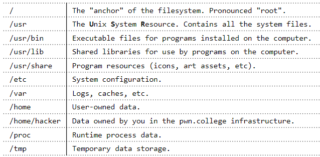

pwn.college各modules的一点笔记
不可视境界线最后变动于：2022年1月20日 晚上
module 1
The file system

1 | |
Binary files
pwn.college的教程还是挺绝的, slide可以做为基础知识的详细参考资料. Binaryfiles的slide在这里
ELF base struct: header-sections-segments
symbols
relocations
dynamic-linking
- ELF is a binary file format.
Contains the program and its data.Describes how the program should be loaded (program/segment headers).Contains metadata describing program components (section headers). - sections gather all needed information to link a given object file and build an executable,
while Program Headers split the executable into segments with different attributes, which will eventually be loaded into memory. - Section headers are not a necessary part of the ELF. Section headers are just metadata.
1 | |
- Several ways to dig in: 在CSAPP里, 当初看的时候被我忽略掉了…
- gcc to make your ELF.
- readelf to parse the ELF header.
- objdump to parse the ELF header and disassemble the source code.
- nm to view your ELF’s symbols.
- patchelf to change some ELF properties.
- objcopy to swap out ELF sections.
- strip to remove otherwise-helpful information (such as symbols).
- kaitai struct (https://ide.kaitai.io/) to look through your ELF interactively.
ELF base struct
ELF files are composed of three major components:
- ELF Header : contains general information about the binary
readelf -h <executable> - Sections : comprise all information needed for linking a target object file in order to build a working executable
readelf -S <executable> - Segments : break down the structure of an ELF binary into suitable chunks to prepare the executable to be loaded into memory
注意segment在链接的时候没有作用, section在运行时没有作用.
一方面Segment通过把section分组来提高装载的效率, 另一方面要注意必须和物理页大小对齐, 以便于pte中的权限控制.
Symbols
Provide interface to Linkers and Debuggers to enforce their functionality.
.dynstr是.dynsym的string table, The section .strtab is the String Table of .symtab Symbol Table. 而且string table的entry数量和symbol table的entry数量一致.

relocation
There are different types of relocatable files:
- Generic object files (*.o).
- Kernel object files (*.ko).
- Shared object files (*.so).
第一种比较简单, 就是一个静态链接的文件.
第二种是
Process Loading
命令行参数和环境变量
1 | |
main函数的参数, 其中argv和envp是字符串数组的指针, 所以是二重指针, 两个数组的最后一个元素是null.
就像这样子:
1 | |
env runs a command with a modified environment. 也可以设置特定的环境变量.
1 | |